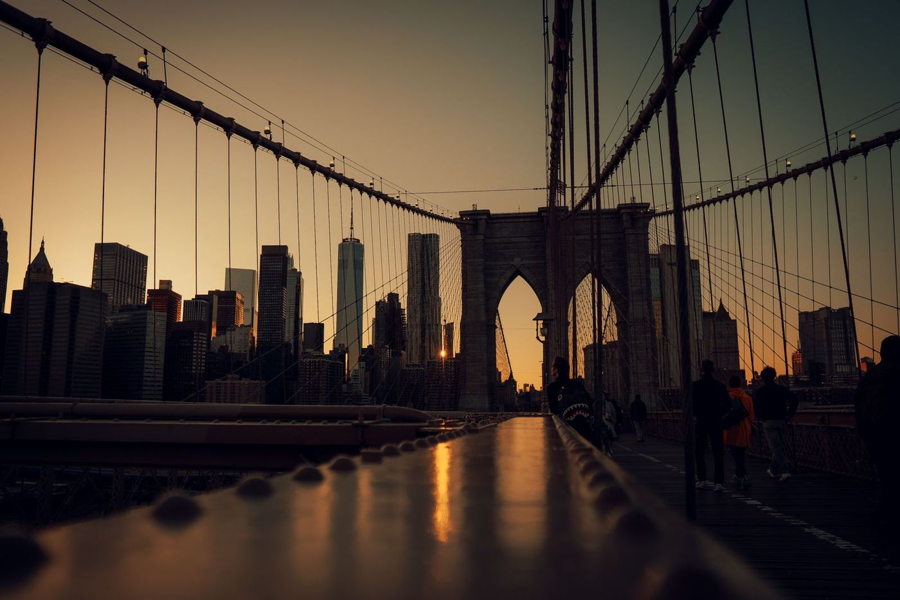
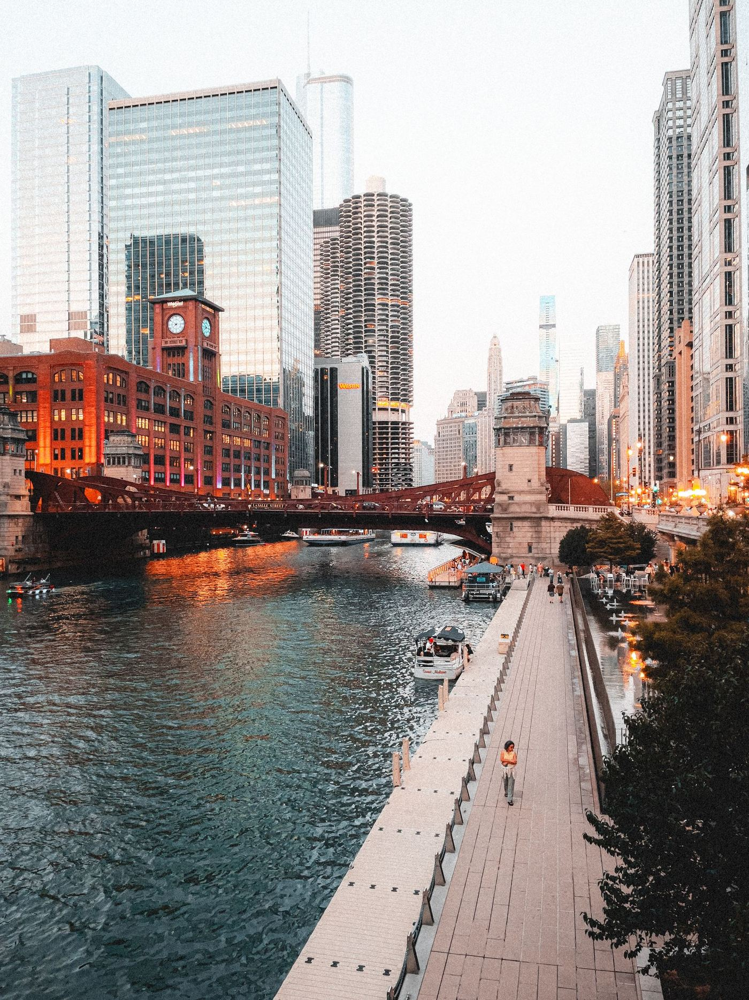
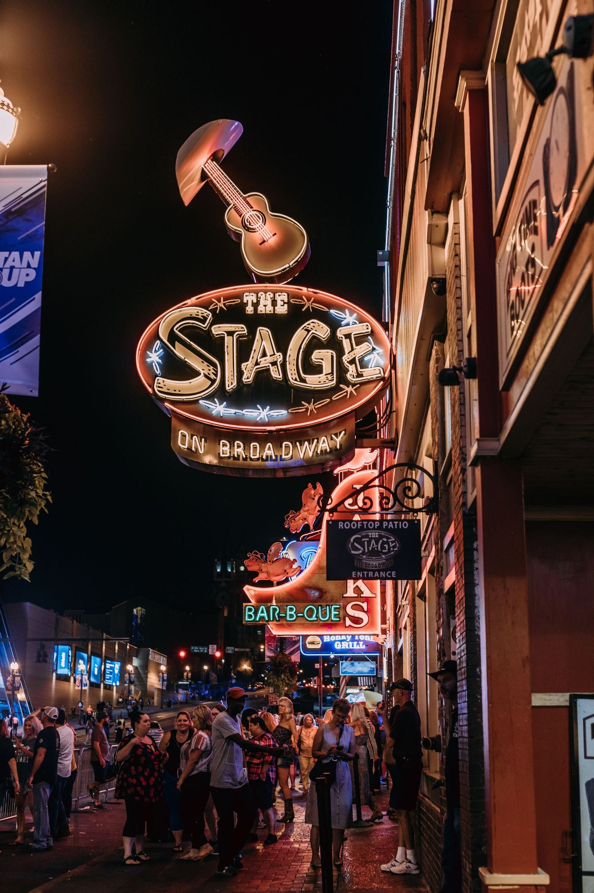
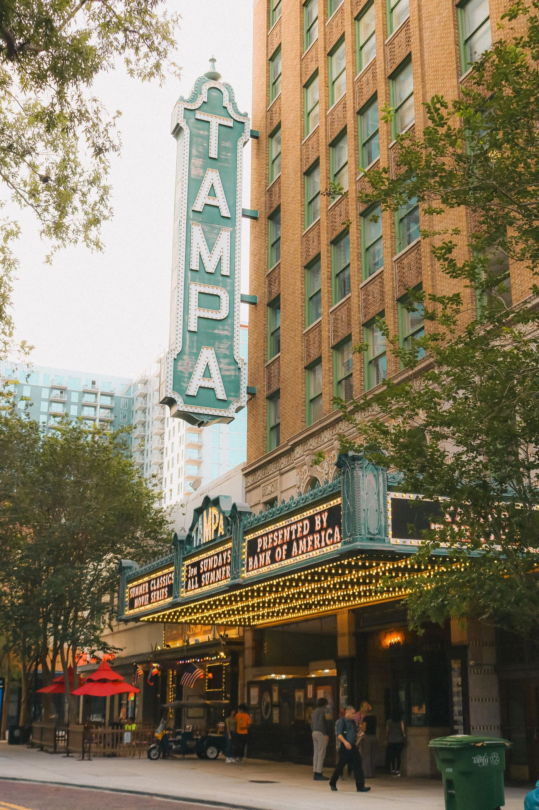
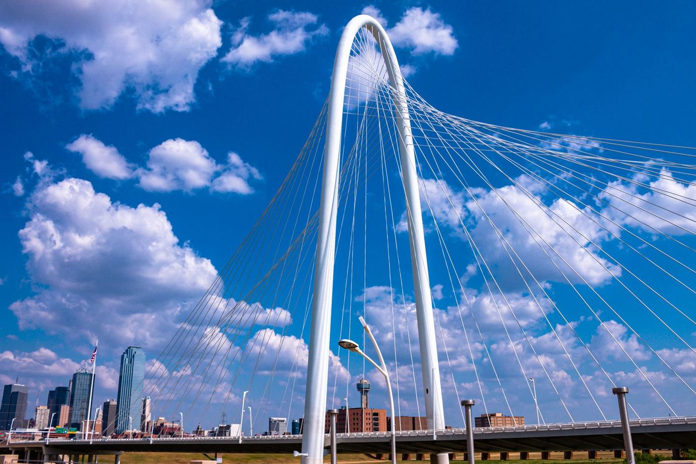
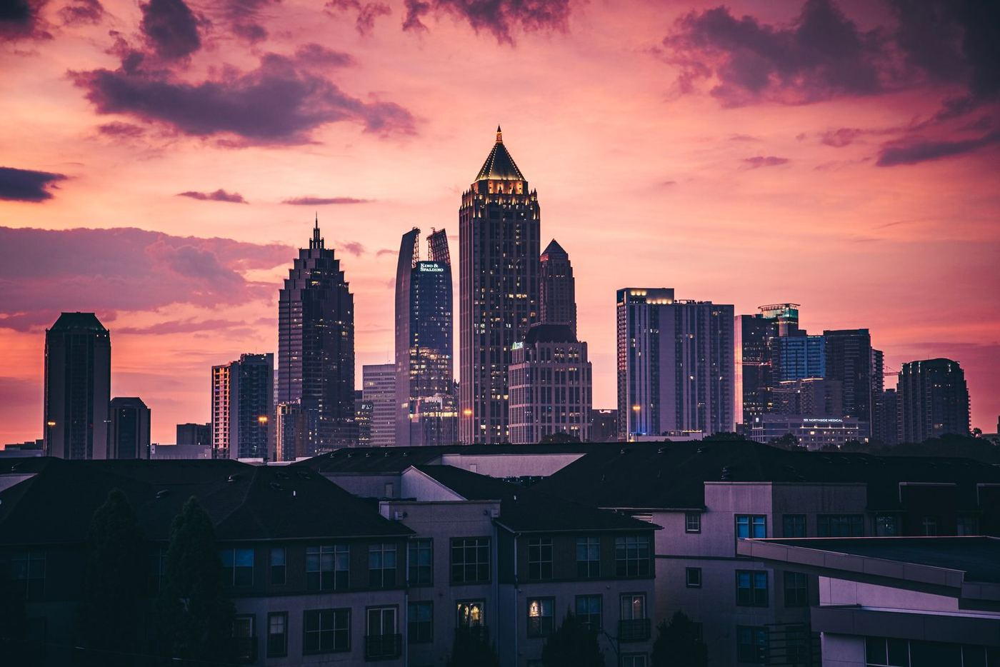
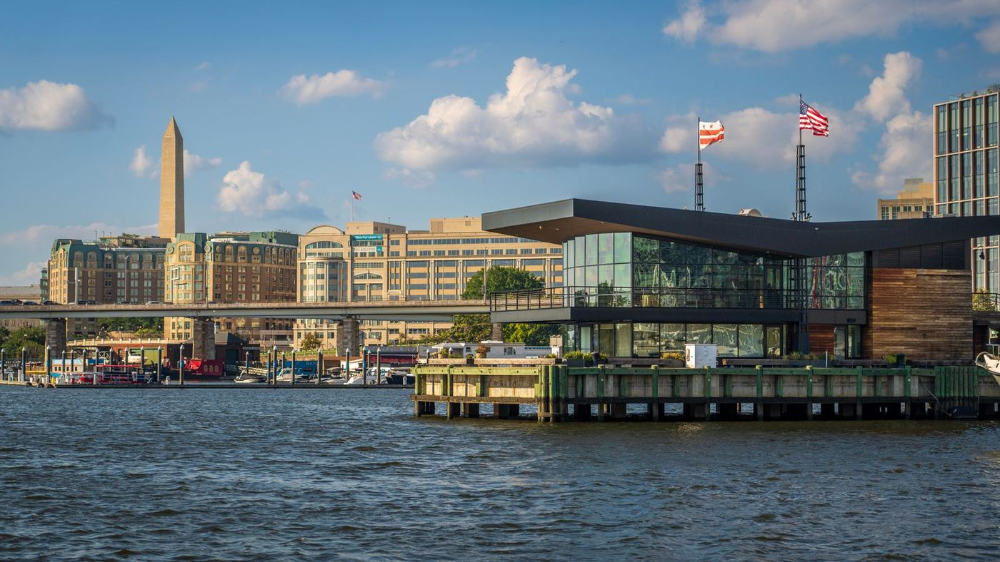
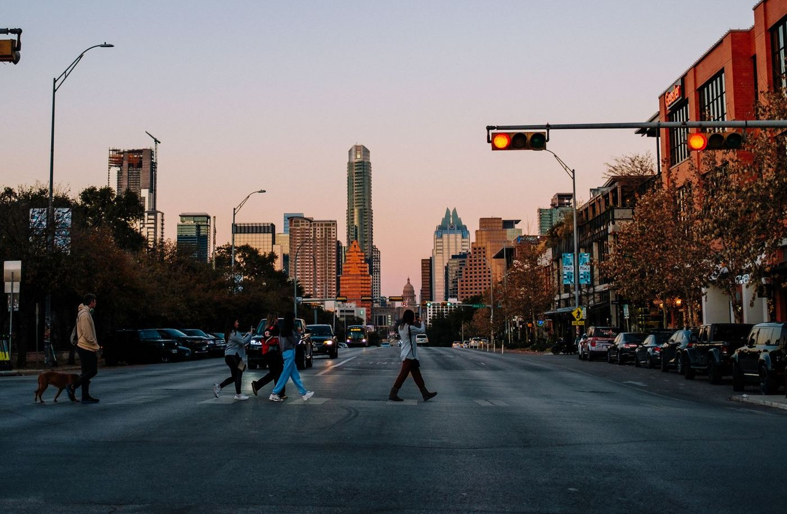

The best cities for local influencers, ranked
Every city claims a creator scene. This ranking grades nine of them on the evidence that matters to a local influencer: how deep the small-creator bench runs, how many independent businesses buy creator visits, whether an audience can be proven local, and whether businesses there are already booking. New York and Chicago lead on proof. Nashville makes the podium on the deepest small-creator bench we counted. Every claim below carries its source.
By Jeff, Founder, SIGNL · Published October 26, 2026 · Updated October 27, 2026 · SIGNL Learn hub

not vibes.
How we ranked, and what we could not measure
A local influencer, in SIGNL's terms, is a creator whose audience substantially lives in the metro they post about. The working band is 500 to 15,000 followers, the Neighbors and Locals tiers, because that is where local discovery actually happens: HypeAuditor's 2026 State of Influencer Marketing report found nano-influencers post Instagram's highest engagement rate of any tier, 1.78 percent, against 0.33 percent for accounts over a million followers. The metric that decides whether a post fills a room is local reach, the share of an audience that lives close enough to act on it.
This is an editorial ranking, built by SIGNL from published sources and weighed on four criteria. It is not a data product and does not pretend to be one: the criteria, the sources and the limits are all on this page, and each city's entry shows its working.
The sources are published and cited in each entry: Feedspot's city food influencer lists (counted in full where a band share is quoted; counts as listed, October 2026), WalletHub's Best Foodie Cities 2026 study of 182 cities, City Observatory's analysis of independent versus chain restaurants in Yelp data, and local and trade press coverage of each city's creator scene. The honest limits: no source anywhere publishes a direct count of a city's small creators, so directory depth is a proxy; directories skew toward large accounts and occasionally list creators who have since moved; and platforms' own marketing claims were excluded throughout, so every city's case rests on independently reported figures. Where a city's evidence is thin, its entry says so.
New York City: the deepest market

Best forCreators who can own one neighborhood completely, inside the deepest independent restaurant market in America.
The deepest bench and the thickest demand base in this study live here. Feedspot's New York food list runs a Top 100, with 244 accounts in its underlying database, the deepest published bench we found. City Observatory's analysis of Yelp data puts New York's chain share at about 13 percent, the independent-heavy extreme among big metros, which means the layer of businesses that buys creator visits is deeper here than anywhere. And the geography serves local reach: five boroughs and fiercely named neighborhoods mean a creator's audience can be genuinely local in a way a business can check, street by street.
The scene organizes by neighborhood because the food does. Flushing and Jackson Heights in Queens run some of the most concentrated immigrant food corridors in the country, block after block of hand-pulled noodles, soup dumplings and late-night street food. Astoria carries a century of Greek dining, Arthur Avenue in the Bronx is the city's original Little Italy, and Sunset Park splits between Mexican and Chinese corridors with a food hall of independent vendors at Industry City. Feedspot maintains separate Brooklyn lists inside its New York coverage, which tells you how the local layer actually works here: nobody's audience is "New York." It is a borough, then a neighborhood, then a few streets. That granularity is exactly what makes a local audience provable to the business buying it.
The institutions stack up behind the creators. New York Restaurant Week runs twice a year, winter and summer, with roughly 600 restaurants across all five boroughs at $30, $45 and $60 prix fixe. The NYC Wine & Food Festival builds a whole creator day, FoodieCon, into its October weekend. The 2025 Michelin selection counts 72 starred restaurants, the most of any American city, and the media layer (Eater NY, Grub Street, The Infatuation, Time Out New York, the Times food desk) treats restaurant discovery as a daily news beat. For a local business, the practical effect is simple: customers here are already trained to find their next meal on a creator's feed.
New York City's eating and drinking establishments employ about 280,000 people, per the NYC Hospitality Alliance citing New York State Comptroller data. No other city offers a local creator this many independent doors to knock on.
The catch: it is also the hardest, most crowded room in America. Much of the famous bench serves national audiences, not neighborhoods; the food list opens at 2.3 million followers. WalletHub ranks New York only 22nd among foodie cities, dragged down by cost. Local is a niche inside the biggest creator market on earth. Inside that niche, nothing else is close.
Chicago: the receipts city

Best forNeighborhood creators. Chicago has 77 official community areas, and the winning accounts belong to one of them.
Chicago's demand is documented in its own press. ABC7 Chicago has covered Amici, a family-run Lakeview restaurant, selling out every day for a month after a single creator video, and Lakeview creator Renee Koontz charging up to $1,000 a post while flexing her rate for businesses that need the exposure. Businesses there do not need the concept explained; they have watched a local post fill a dining room. The bench is real, too. Feedspot's Chicago food list runs a Top 90, and counted in full, 36 of the 84 accounts listed sit between 500 and 15,500 followers (October 2026), the largest in-band bench we counted in absolute terms.
The city's structure is the opportunity. Chicago's 77 community areas were mapped by University of Chicago researchers in the 1920s and still organize how people describe where they live and eat. Creators have built directly on that grid: accounts brand by neighborhood and area code, run date-night and suburb guides, and specialize down to vegan, halal and gluten-free corners of single districts. The food geography matches: the West Loop's Restaurant Row for chef-driven rooms, Pilsen for Mexican corridors and murals, Argyle Street in Uptown for Vietnamese, Chinatown for dim sum, Logan Square and Wicker Park as the young-creator home base. A Chicago creator's claim to a local audience is plausible and checkable street by street, which is more than most cities can say.
Two forces keep pushing the scene upward. First, the calendar: Chicago Restaurant Week drew more than 500 restaurants in 2026, 160 of them women- or minority-owned, and Taste of Chicago remains one of the largest food festivals in the country. Second, the vacuum: WTTW has reported on the contraction of Chicago food journalism, with legacy outlets slimming or dropping food coverage entirely. The discovery job those critics used to do has moved to local creators, and Chicago businesses have adjusted faster than most.
Accounts on Feedspot's Chicago food list sit in the 500 to 15,500 follower band (counted in full, October 2026). It is the largest in-band bench we counted anywhere, in the city where businesses have already seen what one local post can do.
The catch: the top of the scene is celebrity scale, a 733,000-follower account at number one, and WalletHub puts Chicago 25th among foodie cities. Documented demand plus the largest in-band bench we counted earns second place. See how SIGNL is building locally on the Chicago market page.
Nashville: the bench is the story

Best forSmall creators who want an organized scene, real institutions behind them, and a local layer that is still wide open.
Nashville's case is concentration. Counted in full, 19 of the 30 accounts on Feedspot's Nashville food list sit between roughly 700 and 15,500 followers: 63 percent, the highest in-band share of any list we counted. Around that bench, the scene has organized itself in public: The Tennessean devoted a July 2026 feature to whether Nashville is the next big influencer city, reporting creator relocations and both CAA and UTA running Nashville offices; the city held its third annual Creator Awards in May 2026 and a Creator Summit that September; Blogger Xchange runs a year-round creator community; and on October 21, 2026, Nashville hosted the Michelin Guide American South ceremony. A Casino.org study cited by The Tennessean had already ranked Tennessee fourth among states for Instagram influencers back in 2023. The full Nashville story is in Nashville is becoming the it city for local influencers.
Look closer and Nashville's scene is not food-first, which is precisely its strength. The Creator Awards hand out honors in Fashion, Family, Lifestyle, Home and Local Entertainment, with no food category at all: this is a lifestyle and entertainment scene with a dense small-account food layer underneath it, not a one-niche town. The institutional build-out is unlike anywhere else on this list. CAA built content-capture studios into its Nashville Yards headquarters and its agents co-created a Creator Economy 101 class at Belmont University. The Creator Summit, held September 10, 2026 at Ampersand Studios on Music Row, sold out. Blogger Xchange, founded in 2017 by two Nashville natives, runs events, workshops and a brand-partnerships program, and its XPO returned for a third year in August 2026. Talent agencies, a university, an awards show and a standing community: the scaffolding a creator economy needs is already standing here.
The local geography rewards the same focus. East Nashville is the indie creative core, Germantown pairs historic brick with a farm-to-table cluster, 12South is the walkable boutique and brunch strip, The Gulch runs rooftops and the city's most photographed mural, and Wedgewood-Houston is the arts district. Lower Broadway's honky-tonk row drives the tourism content everyone knows, but the creator opportunity sits in the neighborhoods around it, where independent restaurants, boutiques and salons serve people who actually live here. Michelin noticed the dining layer too: Nashville's three one-star restaurants, Bastion, Locust and The Catbird Seat, all kept their stars at the October 2026 ceremony the city hosted. Yelp and Lyft's 2026 foodie cities report went further, putting Nashville eighth in the country, ahead of New York, Chicago and Austin.
Nineteen of the 30 accounts on Feedspot's Nashville food list sit between roughly 700 and 15,500 followers (counted in full, October 2026), the highest in-band share of any city list we counted. Nashville's bench is small-account deep, not celebrity top-heavy.
The catch, stated plainly: there is no Nashville transaction story in print yet, so appetite here is documented culturally, not commercially. City Observatory puts Nashville in the top 10 for chain market share, so the independent layer is proportionally thinner than the scene suggests, and WalletHub ranks it only 32nd among foodie cities. Visitor traffic also means a Nashville following needs local-reach vetting before it means anything. Third place is what the evidence supports today, and the trajectory is the steepest on this list. Nashville is SIGNL's priority founding market; the Nashville market page shows how the roster is being built.
Tampa: the press got there first

Best forFood creators on either shore of the bay, in a market where local features already command real rates.
Tampa's business press is pre-selling the local creator economy to its own readers. Tampa Bay Business & Wealth's December 2025 feature, "Why hyperlocal influencers matter to Tampa Bay businesses," documented a Tampa food truck drawing lines days after opening off one local account's video, and businesses now calling the creator instead of the other way around. WalletHub ranks Tampa the number 7 foodie city in America for 2026. Feedspot's Tampa food list runs a Top 30 with community builders on it, including the founder of a local creator community, and the Tampa Bay Times reported in August 2026 that industry databases identify thousands of Tampa-based creators, many of them food-focused. Creative Loafing's Best of Tampa Bay even runs a Best Foodie Influencer category, won in 2024 by @thisbabeeats.
What sets Tampa apart is that its small-creator economics are in print. The same Business & Wealth feature put local feature rates at roughly $100 to $800 and reported the account behind the food truck story averaging 8,000 to 15,000 reach per post, numbers a Tampa business can plan around. The scene's structure helps: hyperlocal page networks run place-by-place accounts for downtown Tampa, St. Pete, Clearwater Beach and Dunedin under single operators who know each shore's audience separately. The content geography is just as specific. Ybor City brings the historic Cuban, Spanish and Italian layer, anchored by the Columbia Restaurant, open since 1905. Hyde Park and South Howard run the upscale dining corridor, Seminole Heights is the independent and brewery pocket, and Armature Works turned a 1910 streetcar barn into the food hall every Tampa creator films. Across the bay, downtown St. Pete's Central Avenue is the walkable indie grid. Add Gasparilla, the pirate festival that has drawn roughly 300,000 spectators every January since 1904, and a dining scene holding four Michelin one-stars (Ebbe, Kōsen, Koya and Rocca), and the raw material for local content never runs out.
That is the going range for a Tampa Bay local creator feature, reported by Tampa Bay Business & Wealth (December 2025) in its hyperlocal influencer feature. Tampa is one of the few cities where the small-creator rate card is public knowledge.
The catch: Tampa Bay is a two-shore metro. A St. Petersburg creator's audience does not automatically move a Ybor City business, so provable local reach has to be built shore by shore. St. Pete's frustration is measurable in the other direction: Pinellas County has been shut out of Michelin stars two years running despite its indie density. And like Nashville, the demand evidence is cultural rather than transactional: no transaction record has been published here. See the Tampa market page for how SIGNL is approaching the bay.
Dallas: the organized scene

Best forCommunity-minded creators who want recurring business collaborations, not one-off posts.
Dallas has the best organized small-creator community found anywhere in this study. Dallas Social Influencers is a standing community with a 1,000-follower minimum to join that runs monthly meetups and monthly business collaborations, and keeps its members on an availability list for Dallas businesses, which is recurring demand infrastructure, not a hashtag. Feedspot's Dallas food list runs a Top 60, so the discoverable bench is deep, and it stays deep: the 30th entry sits at about 11,700 followers, squarely in the band this ranking cares about. Local media brands like Dallasites101 run creator partnerships and briefs for hospitality and retail clients alongside their own channels.
The structural fact every Dallas creator works around is that Dallas Fort Worth is two cities wearing one market name. Dallas is the polished dining capital; Fort Worth, 30 miles west, is western heritage and barbecue. Creators themselves draw the line: top accounts run separate Dallas and Fort Worth feeds. Inside Dallas, the content concentrates in Deep Ellum's music and late-night corridor, the Bishop Arts boutique village in Oak Cliff, and the Uptown and Knox-Henderson dining spine, with a serious Asian food belt running through Carrollton, Richardson and the Collin County suburbs where many Dallas creators actually live. Fort Worth answers with the Stockyards and the Near Southside's Magnolia Avenue. Michelin only arrived in Texas in 2024, and the whole metroplex holds two one-star rooms, Tatsu in Deep Ellum and Mamani in Uptown, which means the discovery layer in Dallas belongs to creators almost by default.
The media picture underlines it. D Magazine has reported that the Dallas Morning News has not had a full-time restaurant critic since 2019 and that Eater Dallas was thinned by layoffs, while the State Fair of Texas gives creators a 24-day content season every fall, fried-food awards and all. When a national creator toured North Texas in 2024, the Morning News alone ran at least ten stories in under two weeks. The appetite for creator coverage is documented; the critics who used to absorb it are gone.
Dallas Social Influencers gates membership at 1,000 followers and runs monthly meetups and monthly business collaborations. It is the clearest proof in this study that a city's small creators can organize into standing demand infrastructure.
The catch: the visible layer skews big. Eleven entries into Feedspot's Dallas food list, accounts still sit near 100,000 followers, and the small bench lives in the tail and in the community rather than on the directory's front page. Dallas Fort Worth sprawl blurs what "local" means from one suburb to the next, and City Observatory puts Dallas in the top 10 for chain market share. WalletHub ranks it 36th among foodie cities. The Dallas market page covers SIGNL's founding plans for the metroplex.
Atlanta: the volume play

Best forCreators who can prove a genuinely local audience inside the densest restaurant map in the country.
By raw volume, Atlanta's demand pool is unmatched outside New York: WalletHub's 2026 study ranks it 11th among foodie cities and first in the nation in restaurants per capita. The dining bench backs the ranking up. Atlanta holds eight Michelin one-star restaurants in the 2026 Guide American South selection, the strongest showing of any city in this study's southern half, and the scene's center of gravity is gloriously unglamorous: Buford Highway, a strip-mall corridor running through Brookhaven, Chamblee and Doraville whose restaurants and markets represent nearly two dozen countries, per Eater Atlanta's essential guide. Add the BeltLine's Eastside Trail with Ponce City Market and Krog Street Market, chef-driven West Midtown, walkable Decatur, and luxury Buckhead, and Atlanta offers more distinct local food worlds per mile than any city ranked below it.
Atlanta is also where creator power over restaurants stopped being theoretical. When a national creator reviewed Atlanta restaurants in October 2023, the Atlanta Journal-Constitution ran the headline "Move over, Michelin, Atlanta just got Keith Lee'd," a line the New York Times quoted in its year-end social media review. One review drew 15.9 million plays in three days, and local debates about restaurant rules and service culture became a national story. The community layer keeps that energy organized at human scale: Social Media Club ATL runs a monthly coffee meetup in Decatur and a recurring creator happy hour series, and the city's biggest city-guide account, @atl_bucketlist at roughly 410,000 followers, converted its audience into an in-person social club in 2025. Atlanta's signature move is turning online local reach into offline local community.
WalletHub's Best Foodie Cities 2026 ranks Atlanta first of 182 cities in restaurants per capita, and first for affordability and accessibility of highly rated restaurants. The buyer pool for a local creator here is structurally enormous.
The catch is geography. Metro Atlanta sprawl means a creator's "Atlanta audience" can live 25 miles from the business, which taxes provable local reach on every booking harder than in any other city here. The visible layer is macro-headed, too: Atlanta accounts sit at roughly 410,600, 190,600 and 123,100 followers near the top of Feedspot's Georgia food list. The opportunity is real, but it belongs to creators who can separate their in-town audience from the metro sprawl. See the Atlanta market page.
Washington, DC: the suburban blend

Best forNeighborhood-level creators in a compact core, where the entire food scene tops out at genuinely local scale.
The city core is compact, with strong neighborhood identity, exactly the geography where local reach is easiest to prove, and Feedspot's DC food list runs a Top 35. The most telling number on that list is its ceiling: the top account, @dmvbite, sits at about 165,400 followers, and the whole list lives at or below the line where audiences stop being local by default. DC food creators are structurally small, structurally neighborhood, and mostly solo operators. One of the scene's best-known events accounts, ClockOutDC, was built entirely by one person who takes no advertising money at all, a model local audiences trust precisely because it cannot be bought. WalletHub ranks DC 26th of 182 foodie cities, with a top-25 showing on diversity, accessibility and quality.
The neighborhoods give that bench somewhere real to stand. Shaw is the chef-driven dining quarter, 14th Street and U Street run the cocktail and Ethiopian corridors, Union Market packs local vendors into a single food hall, and the Wharf and Navy Yard turned the southwest waterfront into a restaurant district within a decade. The metro also holds the largest Ethiopian community in the country, per OpenTable's DC editors, which gives its food scene a depth no ranking metric captures. Behind it all sits a visitor economy most cities cannot match: Destination DC counted a record 27.2 million visitors and $11.4 billion in visitor spending in 2024, feeding a hospitality layer of independent restaurants, market stalls and food-hall vendors that constantly needs discovery.
The largest account on Feedspot's Washington DC food list would be mid-pack in most cities here. In DC, the entire food bench is built at local scale, which is why provable local reach, not fame, decides who gets booked.
The catch is in the map. Feedspot's "DC" list is really a DMV list: two of its top four accounts are based in Virginia, and the metro's bench and appetite are real but suburban-blended. A "DC audience" can live a county away from the business, which makes provable local reach harder to pin down than the compact core suggests. Its appetite case also rests on bench and geography: the local press has not made the creator economy a beat here the way Nashville's and Tampa's have, so the demand evidence is thinner in print than in the other cities on this list. The Washington DC market page lays out SIGNL's founding approach for the DMV.
Miami: the foodie crown, the celebrity catch

Best forBilingual, resident-first creators who can prove their audience actually lives in the 305.
Miami wears the loudest crown in American food: WalletHub's number 1 foodie city for 2026, first of 182 cities, with 12 Michelin-starred restaurants noted in coverage of the study. The raw material is unmatched: Wynwood's mural district, Little Havana's Calle Ocho, Brickell's rooftop layer, the Design District's dining core, and a calendar anchored by Art Basel Miami Beach each December, which drew 272 exhibitors from more than 40 countries in 2026. The county is 70.6 percent Hispanic or Latino and 54.5 percent foreign-born, per the US Census Bureau, and its creator scene runs bilingually in a way no other city on this list can replicate: Miami's best-known homegrown creator acts post in English and Spanish to audiences that treat both as local languages.
The local layer is building its own institutions. The #NextGen Creators summit, founded by two Miami Beach siblings after they found the booming scene had no central place to connect, drew more than 300 creators, founders and marketers to its fourth and largest edition on October 23, 2026. Below the mega tier, regional food creators field steady inbound demand from restaurants across Miami-Dade and Broward. The demand is real. The problem is proving whose audience it reaches.
The calendar keeps the content coming year-round. Calle Ocho fills 15 blocks of Southwest 8th Street in Little Havana every March as the finale of Carnaval Miami, the South Beach Wine & Food Festival takes February, Miami Spice stretches prix-fixe restaurant season across August and September, and Ultra closes out Miami Music Week in Bayfront Park. A Miami creator never lacks a tentpole. What they lack is separation from the millions who fly in for the same weekends.
Miami-Dade welcomed 28.2 million visitors in the year to June 2025 (Greater Miami Convention & Visitors Bureau) against a resident population of about 2.8 million (US Census Bureau). No other city here asks a creator to prove local reach against that much tourist noise.
For local influencers specifically, the scene's visible layer is celebrity scale: Feedspot's Miami lifestyle list currently opens at 21 million followers, a ceiling roughly 127 times the top of DC's food list, and a tourist-heavy audience mix makes provable local reach hard to evidence. A giant market that rewards the already-famous ranks below smaller rooms where a local account can actually be the headline. The Miami creator who wins here is the one whose local reach survives the audit.
Austin: the professional's town

Best forFood-truck and neighborhood creators working a deep local tail under a professionalized top.
Austin's foodie credentials are elite, fifth in WalletHub's 2026 study, and the bench is real: Feedspot's Austin food list runs a Top 70 with 204 accounts in its database, and the scene is long-established enough to have an "OG," Jane Ko of A Taste of Koko, at 215,100 followers. Ko has been blogging since 2010 and serves as Visit Austin's official restaurant expert, which captures the Austin pattern in one career: the blogger-era local layer professionalized into the city's own destination marketing. The newest proof sits at the top of the list, where a leading Austin food creator has converted a TikTok following into a digital originals series with Austin PBS.
What makes Austin structurally different is its entry-level business class: the food truck. The City of Austin's State of the Food report counts roughly 1,000 food trailers in the city, organized into trailer parks and scattered across East Austin, South Congress and South Lamar. Trucks are not a novelty here; they are how restaurants start, and Michelin has ratified the model, with former trailer LeRoy and Lewis moving to a brick-and-mortar in February 2024 and holding a star within the year. Austin's first Michelin guide, in November 2024, recognized 44 restaurants and made the city the barbecue capital of the starred world: three of Texas's four starred barbecue joints are here. For creators, the consequence is a market where the businesses most hungry for discovery are the smallest, most visual and most local ones in this entire study.
Austin's food-truck count, per the City of Austin's State of the Food report (via Eater Austin). No city on this list gives a small creator more small businesses, and trucks live or die on being posted.
The catch is professionalization. The top of Austin's scene is the most agency-run in this study: the number one account on Feedspot's Austin food list, at 242,400 followers, routes brand contact through a talent management agency. Accounts brand around the festival calendar, SXSW in March, Austin City Limits across two October weekends and the Formula 1 weekend at Circuit of The Americas, which pulls audiences national. The local layer exists, and by the truck count it is enormous, but it is not the layer the city's reputation is built on, and nothing in print documents demand at that local layer to change it. That gap between a famous top and an unmeasured local tail is why Austin closes the list. See the Austin market page.
What SIGNL is doing with this list
A ranking is homework. A roster is a product. SIGNL is enrolling founding creators across its founding cities now, and Nashville, third here on ecosystem evidence, is the priority market where the founding roster is being built first: the deepest small-creator bench we counted relative to its size, an organized scene, and a local layer that is still wide open. The founding terms are the same in every market. Take a comped visit, a meal, service or experience, and post the standard visit, or be booked at your own listed rate and keep 97 percent.
*Creators have up to one week to post. 48 hours is the standard they are held to, and hitting it earns their Momentum. If a week passes with no post, the visit is replaced and does not count against your plan.
Where the numbers come from
Every figure in this ranking traces to one of the published sources below. Directory counts are as listed in October 2026 and drift as the lists update. SIGNL's own framework (local reach, the comped and paid lanes, Momentum) is described as our methodology, never as external data.
- Studies and rankings. HypeAuditor, State of Influencer Marketing 2026 (nano-influencer engagement 1.78 percent vs 0.33 percent for accounts over one million followers). WalletHub, Best Foodie Cities in America in 2026, 182 cities and 28 metrics (Miami 1st, Austin 5th, Tampa 7th, Atlanta 11th and 1st in restaurants per capita, New York 22nd, Chicago 25th, Washington DC 26th, Nashville 32nd, Dallas 36th). City Observatory, "Local flavor: Cities with the most independent restaurants," an analysis of Yelp data at metro level (New York chain share about 13 percent; Dallas and Nashville in the top 10 for chain share). Yelp and Lyft Top Foodie Cities 2026, as reported by The Tennessean (Nashville 8th). Casino.org state influencer study, 2023, as cited by The Tennessean (Tennessee 4th).
- Creator directories. Feedspot city influencer lists, counted in full in October 2026: Top 100 NYC Food (244 accounts in its database), Top 90 Chicago Food (84 listed, 36 in the 500 to 15,500 band), Top 30 Nashville Food (19 in band), Top 30 Tampa Food, Top 60 Dallas Food, Top 35 Washington DC Food, the Georgia Food list, the Miami Lifestyle list (top account 21 million followers) and Top 70 Austin Food (204 in its database). Feedspot maintains separate Brooklyn lists inside its New York coverage.
- New York. NYC Hospitality Alliance District Dining Guide, citing New York State Comptroller data (23,000+ restaurants and bars, about 280,000 employees). Michelin Guide New York 2025 selection (72 starred restaurants). NYC Tourism and Conventions, Restaurant Week 2026 (about 600 restaurants, $30/$45/$60 prix fixe).
- Chicago. ABC7 Chicago (WLS), coverage of Amici in Lakeview and creator Renee Koontz. Choose Chicago, Chicago Restaurant Week 2026 (more than 500 restaurants, 160 women- or minority-owned). WTTW, reporting via NewCity (August 2026) on the contraction of Chicago food journalism. University of Chicago community areas research, via Loyola University Chicago Libraries (77 community areas).
- Nashville. The Tennessean, July 13, 2026 ("Is Nashville the next big influencer city?") and October 21, 2026 (Michelin results). Nashville Lifestyles, May 2026, third annual Nashville Creator Awards. Michelin Guide American South ceremony, Nashville, October 21, 2026 (Bastion, Locust and The Catbird Seat retained one star). Eventbrite and Represent, Nashville Creator Summit, September 10, 2026. The Voice Nashville and CanvasRebel on Blogger Xchange (founded 2017).
- Tampa. Tampa Bay Business & Wealth, December 18, 2025, "Why hyperlocal influencers matter to Tampa Bay businesses" (feature rates of $100 to $800; per-post reach figures). Tampa Bay Times, August 25, 2026 ("industry databases identify thousands of Tampa-based creators") and May 2026 Michelin coverage (Tampa's four one-stars: Ebbe, Kōsen, Koya, Rocca). Creative Loafing Tampa Bay, Best of Tampa Bay 2024 (Best Foodie Influencer). City of Tampa and Visit Tampa Bay, Gasparilla (about 300,000 spectators, held since 1904).
- Dallas. Dallas Social Influencers, membership page (1,000-follower minimum; monthly meetups and monthly business collaborations). D Magazine, February 2024 (North Texas creator tour coverage) and October 2025 (Michelin Guide Texas: Tatsu and Mamani) and August 2025 (Dallas food media contraction). CultureMap Dallas, reporting WalletHub 2026 (Dallas 36th).
- Atlanta. Atlanta Journal-Constitution headline (October 2023) as quoted by The New York Times, December 2023; review play counts via contemporaneous reporting. Atlanta Magazine, October 2026 (eight Atlanta one-stars in the Guide American South selection). Eater Atlanta, essential Buford Highway guide (nearly two dozen countries). Eventbrite listings, Social Media Club ATL monthly meetups. Voyage ATL, 2025 (@atl_bucketlist and the In Common social club).
- Washington, DC. Destination DC, 2024 visitor statistics (27.2 million visitors, $11.4 billion in spending). City Cast DC profile of ClockOutDC. OpenTable DC editors on the region's Ethiopian community.
- Miami. Greater Miami Convention & Visitors Bureau (28.2 million visitors, July 2024 to June 2025; Art Basel Miami Beach 2026, 272 exhibitors). US Census Bureau QuickFacts, Miami-Dade County (70.6 percent Hispanic or Latino; 54.5 percent foreign-born; population about 2.8 million). Haute Living and Modern Luxury, October 2026 (#NextGen Creators summit, 300+ attendees, October 23, 2026). Carnaval Miami and the Kiwanis Club of Little Havana (Calle Ocho, 15 blocks of SW 8th Street); Miami tourism calendars (South Beach Wine & Food Festival; Miami Spice; Ultra Music Festival).
- Austin. City of Austin, State of the Food report (roughly 1,000 food trailers), via Eater Austin. Visit Austin (Michelin Guide Texas debut, November 2024, 44 Austin restaurants recognized; Austin City Limits and Formula 1 dates). Tasting Table, on LeRoy and Lewis (food truck to brick-and-mortar to Michelin star). Feedspot Bloggers, on Jane Ko (blogging since 2010; Visit Austin's official restaurant expert).
- Photography. All photos via Pexels: Lower Broadway, Nashville (hero), Brooklyn Bridge, New York, Chicago Riverwalk, The Stage on Broadway, Nashville, Tampa Theatre, Margaret Hunt Hill Bridge, Dallas, Midtown Atlanta, The Wharf, Washington DC, Wynwood Walls, Miami, South Congress Avenue, Austin, Virginia Beach oceanfront, Denver Union Station.
Questions, answered straight
What makes a city good for local influencers?
Four things, and this ranking weighs all four: creator supply, a deep bench of small creators in the 500 to 15,000 follower band; local-audience density, a neighborhood culture that makes local reach provable; independent-business density, a thick layer of businesses that buy creator visits; and local media strength, demonstrated demand covered by a press that treats the creator economy as news. A city with famous creators but national audiences fails the test that matters.
How were these cities ranked?
On published evidence, cited in the article: Feedspot's city food influencer lists, counted in full where a band share is quoted (counts as listed, October 2026); local and trade press coverage, including ABC7 Chicago's reporting on creator-driven restaurant sellouts; WalletHub's Best Foodie Cities 2026 study of 182 cities; City Observatory's independent-versus-chain analysis of Yelp data; and local press in each market. Platforms' own marketing claims were excluded; only independently reported figures were used. No source publishes a direct count of a city's small creators, so directory depth is a proxy, and the article says where the evidence is thin.
Why is Nashville third if SIGNL chose it as a priority market?
Because the ranking grades whole ecosystems, and two cities have something Nashville does not yet: a deeper public record of businesses booking local creators in volume. Nashville has the deepest small-creator bench we counted relative to its size, the most organized local scene, and a local layer that is still wide open, which is exactly why it is the right place to build first. Priority is a building decision. The ranking is an evidence table. They answer different questions, and Nashville's position in both is earned.
I create in one of these cities. What should I do with this?
Build the asset this ranking rewards: local reach, the share of your audience that lives in your metro. Then claim a founding spot while rosters are forming. Founding creators are reviewed in sign-up order and see every offer first when their market opens. On a standard visit you post 1 post or reel plus 1 story that shares the post; on a paid booking, you set your rate and keep 97 percent.
I run a business in one of these cities. How do I book local creators?
Join the founding business list and your category spot is held in application order. Founding pricing is $199 a month for Self-Service, $349 a month for Growth or $699 a month for Managed, with $100 off the first month, a 3-month minimum, and unused visits rolling into the next month, then expiring. Nothing is charged until your market opens.
Ready to claim your founding spot?
Founding rosters are forming now across SIGNL's founding cities, with Nashville the priority market. Roster order is set by sign-up, founding status never expires, and founding creators see every offer first when their market opens.
Sign-ups live in the SIGNL app
Create your account and build your founding profile in a few minutes: your home city, your handles, your categories, your local share, and a paid rate if you want one. SIGNL is free for creators to join.
Create my founding creator account
Already signed up? Sign in at app.joinsignl.com